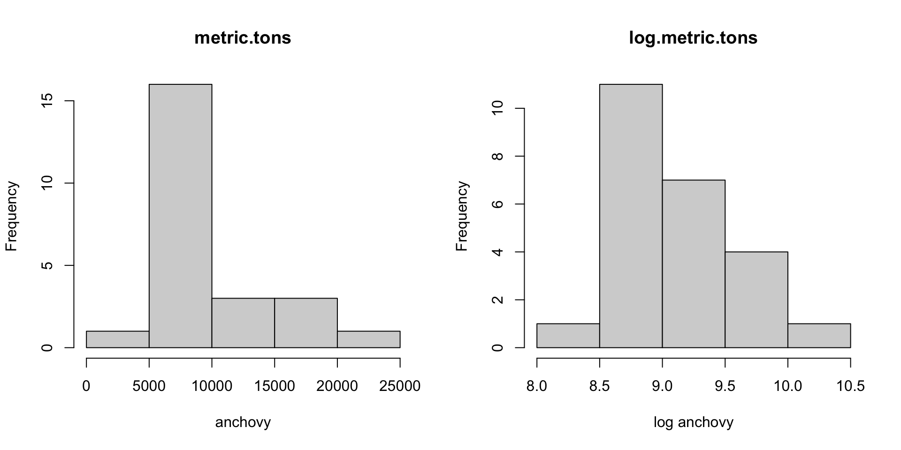

3.4 Fitting ARIMA models
We are now at step B of the Box-Jenkins Method.
A. Model form selection
- Evaluate stationarity and seasonality
- Selection of the differencing level (d)
- Selection of the AR level (p)
- Selection of the MA level (q)
B. Parameter estimation C. Model checking
3.4.1 Fitting with auto.arima()
auto.arima() (in the forecast package) has many arguments.
auto.arima(y, d = NA, D = NA, max.p = 5, max.q = 5, max.P = 2,
max.Q = 2, max.order = 5, max.d = 2, max.D = 1, start.p = 2,
start.q = 2, start.P = 1, start.Q = 1, stationary = FALSE,
seasonal = TRUE, ic = c("aicc", "aic", "bic"), stepwise = TRUE,
trace = FALSE, approximation = (length(x) > 150 | frequency(x) > 12),
truncate = NULL, xreg = NULL, test = c("kpss", "adf", "pp"),
seasonal.test = c("seas", "ocsb", "hegy", "ch"), allowdrift = TRUE,
allowmean = TRUE, lambda = NULL, biasadj = FALSE, parallel = FALSE,
num.cores = 2, x = y, ...)When just getting started, we will focus just on a few of these.
traceTo print out the models that were tested.stepwiseandapproximationTo use slower but better estimation when selecting model order.testThe test to use to select the amount of differencing.
Load the data
Load the data.
load("landings.RData")anchovy87ts is a ts object of the log metric tons for 1964-1987. We will use this for auto.arima() however we could also use anchovy87$log.metric.tons. anchovy87ts is just
anchovy87ts <- ts(anchovy87, start=1964)Fit to the anchovy data using auto.arima()
fit <- forecast::auto.arima(anchovy87ts)Here are the values for anchovy in Table 8 of Stergiou and Christou.
| Model | \(\theta_1\) | drift (c) | R\(^2\) | BIC | LB |
|---|---|---|---|---|---|
| (0,1,1) | 0.563 | 0.064 | 0.83 | 1775 | 5.4 |
Here is the equivalent values from the best fit from auto.arima():
| Model | theta1 | drift | R2 | BIC | LB |
|---|---|---|---|---|---|
| (0,1,1) | 0.5731337 | 0.0640889 | 0.8402976 | -3.584377 | 5.372543 |
Where do we find each of the components of Stergiou and Christou’s Table 8?
The parameter estimates
We can extract the parameter estimates from a fitted object in R using coef().
coef(fit)## ma1 drift
## -0.5731337 0.0640889The ma1 is the same as \(\theta_1\) except its negative because of the way Stergiou and Christou write their MA models. They write it as
\[e_t = \eta_t - \theta_1 \eta_{t-1}\]
instead of the form that auto.arima() uses
\[e_t = \eta_t + \theta_1 \eta_{t-1}\]
Computing R2
This is not output as part of a arima fitted object so we need to compute it.
res <- resid(fit)
dat <- anchovy87$log.metric.tons
meany <- mean(dat, na.rm=TRUE)
r2 <- 1- sum(res^2,na.rm=TRUE)/sum((dat-meany)^2,na.rm=TRUE)Ljung-Box statistic
LB <- Box.test(res, type="Ljung-Box", lag=12, fitdf=2)$statisticfitdf=2 is from the number of parameters estimated.
BIC
BIC is in fit$BIC. Why is BIC different? Because there is a missing constant, which is fairly common. The absolute value of BIC is unimportant. Only its value relative to other models that you tested is important.
3.4.2 Outputting the models tested
Pass in trace=TRUE to see a list of the models tested in auto.arima()’s search. By default auto.arima() uses AICc for model selection and the AICc values are shown. Smaller is better for AICc and AICc values that are different by less than 2 have similar data support. Look for any models with similar AICc to the best selected model. You should consider that model also.
forecast::auto.arima(anchovy87ts, trace=TRUE)##
## ARIMA(2,1,2) with drift : 0.9971438
## ARIMA(0,1,0) with drift : -1.582738
## ARIMA(1,1,0) with drift : -3.215851
## ARIMA(0,1,1) with drift : -5.727702
## ARIMA(0,1,0) : -1.869767
## ARIMA(1,1,1) with drift : -2.907571
## ARIMA(0,1,2) with drift : -3.219136
## ARIMA(1,1,2) with drift : -1.363802
## ARIMA(0,1,1) : -1.425496
##
## Best model: ARIMA(0,1,1) with drift## Series: anchovy87ts
## ARIMA(0,1,1) with drift
##
## Coefficients:
## ma1 drift
## -0.5731 0.0641
## s.e. 0.1610 0.0173
##
## sigma^2 estimated as 0.03583: log likelihood=6.5
## AIC=-6.99 AICc=-5.73 BIC=-3.583.4.3 Repeat with the sardine data
Stergiou and Christou sardine model (Table 8) is ARIMA(0,1,0): \[x_t = x_{t-1}+e_t\]
The model selected by auto.arima() is ARIMA(0,0,1):
\[x_t = e_t + \theta_1 e_{t-1}\]
forecast::auto.arima(sardine87ts)## Series: sardine87ts
## ARIMA(0,1,1) with drift
##
## Coefficients:
## ma1 drift
## -0.5731 0.0641
## s.e. 0.1610 0.0173
##
## sigma^2 estimated as 0.03583: log likelihood=6.5
## AIC=-6.99 AICc=-5.73 BIC=-3.58Why? Stergiou and Christou used the Augmented Dickey-Fuller test to determine the amount of differencing needed while the default for auto.arima() is to use the KPSS test.
Repeat using test='adf'
Now the selected model is the same.
fit <- auto.arima(sardine87ts, test="adf")
fit## Series: sardine87ts
## ARIMA(0,1,1) with drift
##
## Coefficients:
## ma1 drift
## -0.5731 0.0641
## s.e. 0.1610 0.0173
##
## sigma^2 estimated as 0.03583: log likelihood=6.5
## AIC=-6.99 AICc=-5.73 BIC=-3.58Compare the estimated values in Stergiou and Christou Table 8:
| Model | \(\theta_1\) | drift (c) | R2 | BIC | LB |
|---|---|---|---|---|---|
| (0,1,0) | NA | NA | 0.00 | 1396 | 22.2 |
versus from auto.arima()
## Warning in mean.default(sardine, na.rm = TRUE): argument is not numeric or
## logical: returning NA## Warning in Ops.factor(left, right): '-' not meaningful for factors| Model | theta1 | drift | R2 | BIC | LB |
|---|---|---|---|---|---|
| (0,1,0) | 0.5731337 | 0.0640889 | -Inf | -3.584377 | 5.372543 |
3.4.4 Missing values
These functions work fine with missing values. Missing values are denoted NA.
anchovy.miss <- anchovy87ts
anchovy.miss[10:14] <- NA
fit <- auto.arima(anchovy.miss)
fit## Series: anchovy.miss
## ARIMA(1,1,0) with drift
##
## Coefficients:
## ar1 drift
## -0.5622 0.067
## s.e. 0.2109 0.022
##
## sigma^2 estimated as 0.02245: log likelihood=6.35
## AIC=-6.71 AICc=-5.45 BIC=-3.33.4.5 Fit a specific ARIMA model
Sometimes you don’t want to search, but rather fit an ARIMA model with a specific order. Say you wanted to fit this model:
\[x_t = \beta_1 x_{t-1} + \beta_2 x_{t-2} + e_t\]
For that you can use Arima() in the forecast package:
fit.AR2 <- forecast::Arima(anchovy87ts, order=c(2,0,0))
fit.AR2## Series: anchovy87ts
## ARIMA(2,0,0) with non-zero mean
##
## Coefficients:
## ar1 ar2 mean
## 0.6912 0.2637 9.2353
## s.e. 0.2063 0.2142 0.5342
##
## sigma^2 estimated as 0.0511: log likelihood=2.1
## AIC=3.81 AICc=5.91 BIC=8.523.4.6 Model checking
Plot your data
Is the plot long-tailed (Chl, some types of fish data)? Take the logarithm.
Fit model.
Plot your residuals
Check your residuals for stationarity, normality, and independence
Ideally your response variable will be unimodal. If not, you are using an ARIMA model that doesn’t produce data like yours. While you could change the assumptions about the error distribution in the model, it will be easier to transform your data.
Look at histograms of your data:

Use checkresiduals() to do basic diagnostics.
fit <- forecast::auto.arima(anchovy87ts)
checkresiduals(fit)##
## Ljung-Box test
##
## data: Residuals from ARIMA(0,1,1) with drift
## Q* = 1.4883, df = 3, p-value = 0.685
##
## Model df: 2. Total lags used: 53.4.7 Workflow for non-seasonal data
Go through Box-Jenkins Method to evaluate stationarity
Plot the data and make decisions about transformations to make the data more unimodal
Make some decisions about differencing and any other data transformations via the stationarity tests
Use
auto.arima(data, trace=TRUE)to evaluate what ARMA models best fit the data. Fix the differencing if needed.Determine a set of candidate models. Include a null model in the candidate list. naive and naive with drift are typical nulls.
Test candidate models for forecast performance with cross-validation (next lecture).
3.4.8 Stepwise vs exhaustive model selection
Stepwise model selection is fast and useful if you need to explore many models and it takes awhile to fit each model. Our models fit quickly and we don’t have season in our models. Though it will not make a difference for this particular dataset, in general set stepwise=FALSE to do a more thorough model search.
forecast::auto.arima(anchovy87ts, stepwise=FALSE, approximation=FALSE)## Series: anchovy87ts
## ARIMA(0,1,1) with drift
##
## Coefficients:
## ma1 drift
## -0.5731 0.0641
## s.e. 0.1610 0.0173
##
## sigma^2 estimated as 0.03583: log likelihood=6.5
## AIC=-6.99 AICc=-5.73 BIC=-3.583.4.9 Summary
auto.arima()in the forecast package is a good choice for selection and fitting of ARIMA models.Arima()is a good choice when you know the order (structure) of the model.- You (may) need to know whether the mean of the data should be zero and whether it is stationary around a linear line.
include.mean=TRUEmeans the mean is not zeroinclude.drift=TRUEmeans fit a model that fluctuates around a trend (up or down)